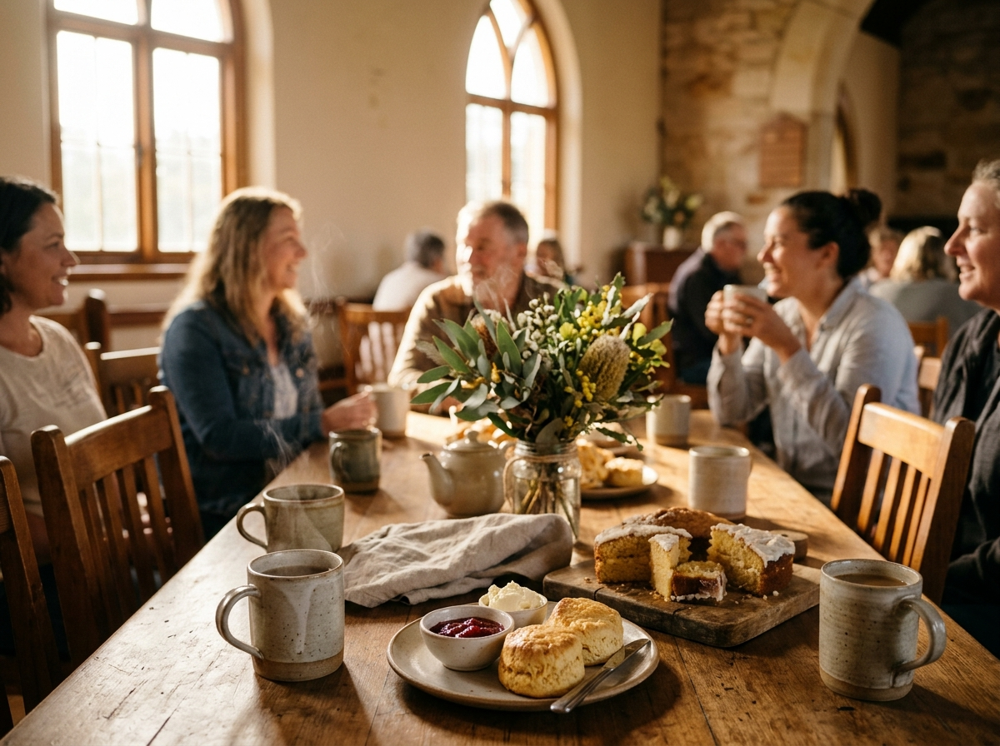

Crèche Room
We provide a creche room where younger children can play during the service if required. Note that this space is not formally supervised (parents/carers supervise). Audio from the service is broadcast inside.
Visiting a new church can raise lots of questions. Here is a simple overview of our Sunday mornings, kids programs, and welcoming community in Leongatha.
South Gippsland Christian Reformed Church meets together for Worship each Sunday at 10 am. We also hold services on Good Friday and Christmas Day.
Our worship services include music and singing, prayer, Bible Readings, a Kids Talk, a Sermon and other common elements of a traditional Christian worship service.
During the service, audio is available in a child-friendly room if required.
Following the service is a time fellowship with tea, coffee and morning tea in the church hall.
Please come and join us on any Sunday, we would love to see you. If you require any additional information please don't hesitate to contact us.

Children, youth, and families are an essential and valued part of the SGCRC church community.
We provide a creche room where younger children can play during the service if required. Note that this space is not formally supervised (parents/carers supervise). Audio from the service is broadcast inside.
Our worship services include a kids talk, a short topical message presented to primary and younger aged children before they head out to Kids Church.
After the kids talk, primary-aged children (up to 12) have the option of joining Kids Church—an engaging Sunday school session led by our passionate and approved leaders.
Meets fortnightly on Friday nights from 7:00 pm to 9:00 pm during school terms. A fun, welcoming space for teenagers to hang out, play games, build friendships, and explore faith together.
Corner of Brown St & Peart St, Leongatha VIC 3953
Open map & directions →Come as you are — you’ll find friendly faces ready to greet you at the timber entrance porch before 10:00 am.
Have questions before you visit? Reach out to Rev. Chris Shannon on 0421 904 705 or email pastor@crcsg.org.au.